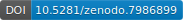
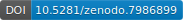

TDMS · 


 

Time-Domain Maxwell Solver
TDMS, the Time Domain Maxwell Solver, is a hybrid C++ and MATLAB tool for simulating light propagation through a medium by solving Maxwell's equations. For further details about the method, please refer to the PDF documentation.

Getting started
We don't ship binaries at the moment, so to use TDMS, it has to be compiled. It needs to be built against FFTW and MATLAB, which must be downloaded and installed first.
 Linux prerequisite setup
Linux prerequisite setup
Assuming you don't already have them, you'll need a C++ compiler, CMake, OpenMP and FFTW.
For Debian-based distributions this should be as simple as
 MacOS prerequisite setup
MacOS prerequisite setup
On MacOS everything can be installed using Homebrew:
 Windows prerequisite setup
Windows prerequisite setup
TDMS was developed - and extensively tested - on linux. Support for Windows is quite new and experimental (please report any issues you encounter!).
It might be more straightforward to use the Windows subsystem for Linux (WSL2), or set up an linux virtual machine.
However, TDMS can be compiled natively on Windows. This has been tested Windows 10 and 11, with PowerShell.
Assuming you don't already have them, you'll need to download and install:
- MATLAB,
- Visual Studio and be sure to select the C++ developer kit,
- CMake,
- and FFTW.
You can check that the Visual Studio compiler was installed with:
Potentially the simplest way to get FFTW is via conda:
You'll need to ensure the paths to FFTW and MATLAB (the locations of fftw3.dll and libmex.dll respectively) are in the env:Path.
These can be found, e.g. by
Which should return something like C:\Program Files (x86)\MATLAB\R20XXx\bin\matlab and maybe C:\ProgramData\envs\base\bin. If you downloaded FFTW and created fftw3.dll with lib.exe, you just need to know where you saved it.
You can append the paths:
Which will help Windows locate .dll files later. For all following instructions, you'll have to substitute our mentions of tdms with tdms.exe and $ is used to denote a command prompt which, in PowerShell, would look like PS>
Even more Windows troubleshooting
We've seen that in a fresh PowerShell window, Windows does not remember the location of the .dll files, so you may have to re-add them to the path, or copy them into the directory where TDMS was installed.
TDMS typically installs to "C:\Program Files (x86)\tdms\bin\tdms.exe".
You'll need to download and install MATLAB, and take note where the headers are installed.
Installation
To compile and install, follow these steps:
If CMake cannot find MATLAB, FFTW, or install to the default installation prefix, uncomment the relevant line(s) and modify the path(s) accordingly.
You can check that tdms was installed correctly and is in your PATH by running:
in a new terminal.
How to run
You can run TDMS either directly or from a MATLAB script. For beginners, we recommend starting with the demonstration MATLAB script, which you can find in the examples/arc_01 directory. Move into this directory, launch MATLAB, and run the MATLAB script run_pstd_bscan.m. This script will generate the input to TDMS, run TDMS, and display sample output. There are comments explaining what it is doing, so you can follow along with what is being setup and created at each stage. We have also commented the input file arc_01_example_input.m that this script passes to iteratefdtd_matrix.m.
Troubleshooting
We've seen that launching MATLAB on MacOS via the launcher (cmd + space) may not preserve the system PATH.
Assuming tdms --help works in a new terminal, try launching MATLAB from that terminal.
The MATLAB example scripts should then find tdms. If you still have problems, you can try hard-coding the full path to tdms into the MATLAB script.
In a terminal run
Copy the full path (something like /usr/local/bin/tdms) into run_pstd_bscan.m, replacing the ‘'tdms’ text in the calls to the system()` function.
MATLAB file version
In order to be readable by TDMS, files need to be saved in .mat (MATLAB file) version 7.3 or newer. This can be done by passing '-v7.3' to MATLAB's save command as the final argument, for example:
Or set v7.3 as the default in MATLAB's settings.

On the command line
If you want to run TDMS standalone at the command line, the basic operation is with two arguments: an input file containing simulation parameters, and an output file name. You can choose between two solver methods: finite-difference or pseudo-spectral, as well as two interpolation methods: cubic or bandlimited. These options can be selected by setting the corresponding flag variables in the input file. When tdms reads the input, it will verify if the input file contains a dataset that matches the names of these flags.
There are two flags available for configuration in the input file.
use_pstd
- If not provided, or provided as false, then the default timestepping method of finite-differences (FDTD) will be used.
- If present and set to true, then tdms will use the pseudo-spectral (PSTD) method when performing simulation timesteps.
use_bli
- If not provided, or provided as false, then the default interpolation method of cubic interpolation will be used to obtain field values at the centres of Yee cells.
- If present and set to true, then tdms will use bandlimited interpolation (BLI) when obtaining field values at Yee cell centres.
- Note
- Typically bandlimited interpolation is superior to cubic interpolation when the extent of the Yee cell is of approximately the same order as, but slightly less than, one-sixth of the shortest wavelength of interest. Otherwise, cubic interpolation typically enjoys superior accuracy.
TDMS is parallelised with OpenMP. You can set the maximum number of threads using the OMP_NUM_THREADS environment variable before calling the TDMS executable.
Citation
If you used TDMS in your research and found it helpful, please cite this work: 10.5281/zenodo.7950604.
BibTEX
LaTeX
Acknowledgements
The TDMS source code was released under a GPL-3.0 License as part of a joint project between University College London's Medical Physics and Biomedical Engineering and Centre for Advanced Research Computing with generous funding from the Royal Society.


Development of this software has previously benefited from funding from the Commonwealth Scholarships Commission, the Engineering and Physical Sciences Research Council, and the Australian Research Council.
Want to contribute?
We're grateful for bug reports, feature requests, and pull requests. Please see our contribution guidelines (we also have some developer documentation).